Liderando una revolución que redefine el futuro de la industria solar
El reconocimiento de nuestros clientes nos impulsa: garantizamos servicios excepcionales.
Únete al futuro de la administración optimizada para empresas solares. Accede a una plataforma de clase mundial, confiable y referenciada
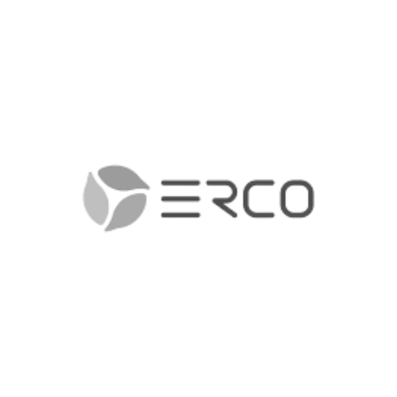
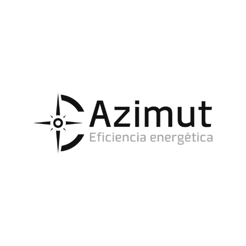
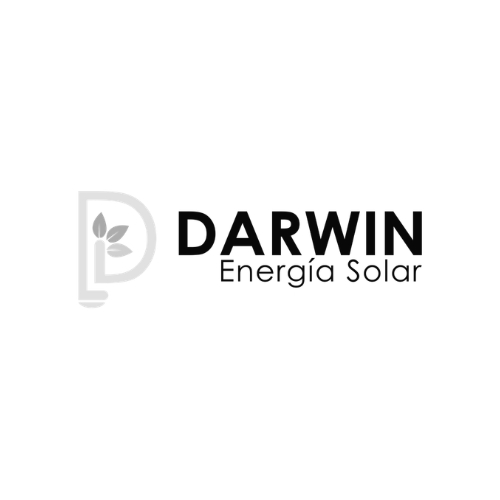
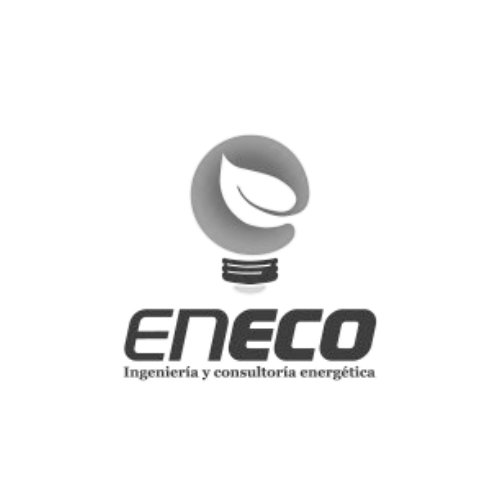
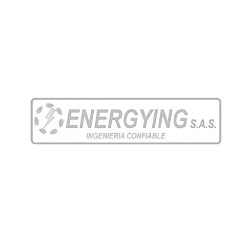
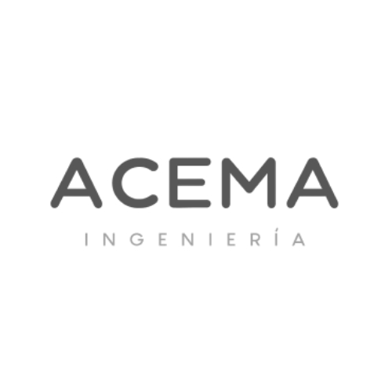
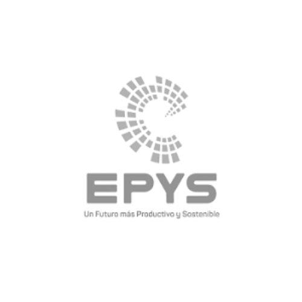
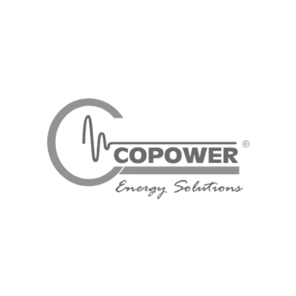
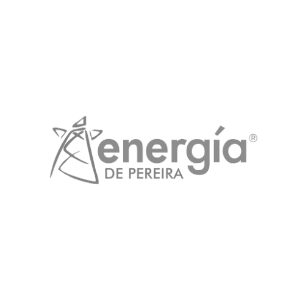
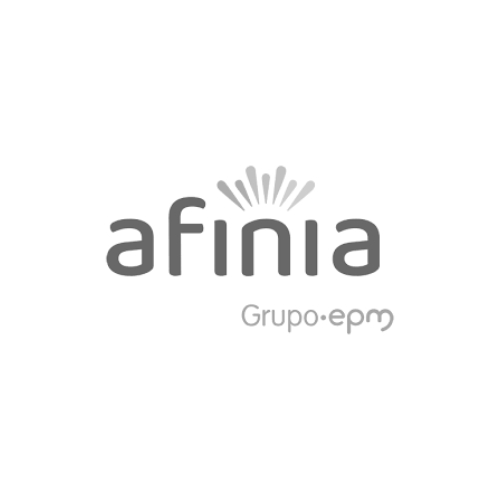
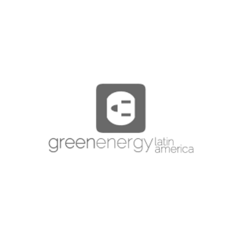
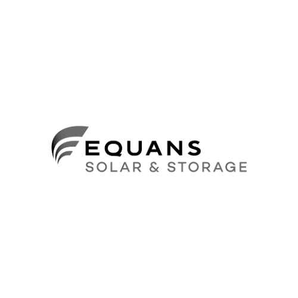
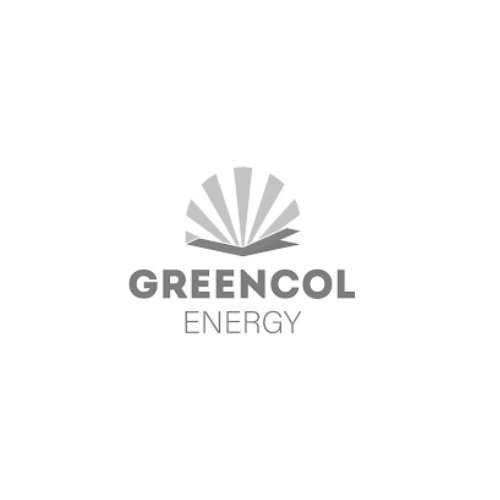
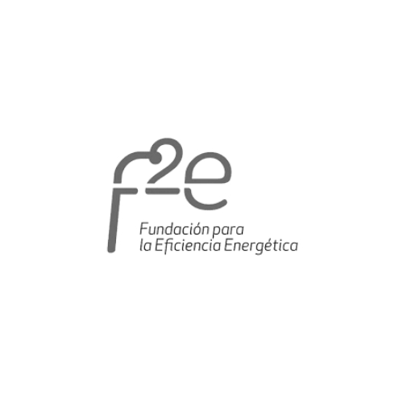

Una suscripción integral
con valor fijo mensual
EX-VIEW Solar ofrece un modelo de suscripción escalable donde nuestros clientes obtienen ahorros de hasta a un 50% en comparación con soluciones tradicionales basada en MW, licencias, costos variables o servicios fragmentados
+300
Proyectos
Implementados
+80
Clientes Satisfechos
+5
GWP Inspeccionados
+80
GWP Monitoreados
+8000
Horas de captura en
termografía
+10
Años en O&M y TAM
+450
Reportes certificados
de termografías
+9
Proyectos en
diferentes paises

Integra la captura de datos con drones y equipos eléctricos con procesamiento avanzado de inteligencia artificial para identificar anomalías, fallos y sus causas. La solución automatiza las inspecciones termográficas y entrega reportes certificados y tableros gerenciales claros, permitiendo optimizar el mantenimiento y certificar el estado de la planta fotovoltaica con agilidad y total confianza.
THERMOSCOPE: Visibilidad total para una operación solar más eficiente y confiable

Inspección térmica
Recolección semiautomatizad a de información.
- Gestión de drones propios o del cliente para la captura de información
- Metodología estandarizada de captura
- Cumplimiento del estándar IEC 62446–3:2017 y la norma RAC-100

Gestión de activos
Inspección y optimización de los activos energéticos.
- Clasificación de anomalías automáticas con IA
- Monitoreo del ciclo de vida del activo
- Monitoreo de evolución de las anomalías (Multitemporalidad)
- Análisis de eficiencia de páneles
- Reportes automatizados y ad-hoc
- Herramientas colaborativas

Inteligencia artificial
Modelos de simulación y análisis de información.
- Machine learning con patrones de reconocimiento para pronósticos de generación, detección de anomalías y mantenimiento predictivo
- Análisis de series de tiempo y modelos estadísticos para factores que impacten la curva IV
- Visualización inteligente
- Sistemas de información Geográfica para modelos térmicos de radiación, sombras y rendimiento

Visualización remota
Acciones correctivas de mantenimiento en campo.
- Lista de acciones para corrección
- GPS y mapa asistido para ubicación de defectos
- Guías asistidas de mantenimiento
- Detalles de notas, comentarios, documentos y fotos
- Actualización de mantenimiento e integración con sistemas de Clientes
- Referenciación de números de serie de elementos

Integra la data de cualquier SCADA y Logger, centralizando portafolios de activos, sin necesidad de hardware con un mínimo impacto en el OPEX e alarmas y eventos a un CMMS para una gestión técnica del portafolio de activos fotovoltaicos eficiente y profesional. De esta forma, Inversores, Strings, STS, Trackers son gestionados en UNA sola Plataforma.
SENTINEL: Todos sus activos solares, conectados en tiempo real y bajo control

Integración de componentes
Recolección automatizada de información en tiempo real.
- Integración directa con datos de inversores, Strings, STS, Combiner Boxes y sistemas SCADA.
- Integración con estaciones meteorológicas en línea y de sitio, PLC, HMI.
- Integración con sistemas satelitales y software de medición termográfica y de radiación solar.
- Cumplimiento del estándar IEC 61724-1 / NREL para monitoreo y análisis de desempeño.
- Cumplimiento del estándar IEC 61853 para monitoreo del comportamiento bajo condiciones no STC.

Monitoreo remoto
Inspección y optimización de los activos energéticos.
- Clasificación automática de anomalías con IA.
- Monitoreo del ciclo de vida del activo.
- Monitoreo de evolución de anomalías (multitemporalidad).
- Análisis de eficiencia de paneles.
- Reportes automatizados y ad-hoc.
- Herramientas colaborativas.

KPI’s y Pronósticos
Modelos de simulación y análisis de información.
- Machine learning con reconocimiento de patrones para pronósticos de generación, detección de anomalías y mantenimiento predictivo.
- Análisis de series de tiempo y modelos estadísticos para factores que impactan la curva IV.
- Visualización inteligente.
- Sistemas de información geográfica para modelos térmicos de radiación, sombras y rendimiento.

CMMS Integrado
Acciones correctivas de mantenimiento en campo.
- Lista de acciones para corrección.
- GPS y mapa asistido para ubicación de defectos.
- Guías asistidas de mantenimiento.
- Detalles de notas, comentarios, documentos y fotos.
- Actualización de mantenimiento.
- Integración con sistemas de mantenimiento de clientes.
- Referenciación de números de serie de elementos.
Gestión integrada de activos solares: captura, análisis y optimización
EX‑VIEW Solar es una plataforma en la nube que integra la captura de datos de parques solares con inteligencia artificial para optimizar el rendimiento, realizar monitoreo en tiempo real, automatizar inspecciones termográficas y generar reportes técnicos y gerenciales con precisión y agilidad. Administre integralmente todos sus activos fotovoltaicos: Capture. Almacene. Digitalice. Inspeccione. Analice. Gestione.

Captura de realidad 3D

Monitoreo en tiempo real

Procesamiento y análisis AI de anomalías

Certificación termográfica

CMMS - Gestión de mantenimientos

Información estado de componentes.

O&M Remoto y Geo-Referenciado

Indiadores PR,EPI,PPI, I-V, pronósticos

Soporte al cliente
EX-View es diferente
EX-VIEW SOLAR 
|
OTROS | |
|---|---|---|
| IEC y RAC-100 | IEC 62446 y RAC-100 OK | NO TODOS, COSTOS ADICIONALES |
| COBERTURA DE TODO EL PARQUE | 100% TODOS LOS PANELES. ORTOFOTO TÉRMICA Y RGB | SOLO LOS PANELES CON PROBLEMAS |
| TIEMPO DE ENTREGA | 4-5 DÍAS | 10-20 DÍAS |
| NÚMERO DE ANOMALÍAS DETECTADAS | 17+ | DEPENDE DE MÓDULOS COMPRADOS |
| CAPTURA INCLUIDA | SI (Posibilidad de Gestionar sus drones) | NO (Cobro de Software + Captura por MW) |
| GEORREFERENCIACIÓN INCLUIDA | SI. GIS POR PARQUE Y PANEL | NO TODOS, COSTOS ADICIONALES |
| RESTRICCIÓN DE USUARIOS | NO | SI |
| RESTRICCIÓN DE FUNCIONALIDADES | NO. CLIENTE ES DUEÑO DE INFORMACIÓN | SI. CLIENTE PIERDE DATOS SI NO RENUEVA |
| ACCESO A MÓDULO DE REPORTES | SI | NO. SOLO REPORTE BÁSICO |
| COSTO POR MW | NO | SI |
| PRECIO FIJO Y CLARO SOLUCIÓN TERMOGRAFÍA | SI. SUSCRIPCIÓN ANUAL | NO. ESTÁ ASOCIADA A MW, COSTO EXTRA |
| PRECIO FIJO Y CLARO SOLUCIÓN REMOTA | SI. VALOR FIJO POR USUARIO | NO. ESTÁ ASOCIADA A MW, COSTO EXTRA |
| CERTIFICACIÓN INCLUIDA | SI. PARQUE Y EQUIPOS. CALIBRACIÓN | NO TODOS, COSTOS ADICIONALES |
| CONTROL DE CALIDAD EN FASES | SI. REVISIONES Y RECAPTURA INCLUIDA | NO TODOS, COSTOS ADICIONALES |
| SOPORTE A USUARIOS | SI. SOLUCIÓN HECHA EN COLOMBIA. SOPORTE LOCAL E INTERNACIONAL | SOLO EN CIERTOS PAÍSES. BAJO NIVEL DE SOPORTE A USUARIOS EN LATAM |
| GARANTÍA DE CALIDAD EN TERMOGRAFÍAS | SI. 100% SI HAY INCONSISTENCIAS | NO. DEPENDEN DE EMPRESA DE DRONES |
¿Por qué las empreas líderes elígen a EX-VIEW?

Una suscripción integral con valor fijo mensual
Ahorra hasta un 50 % en análisis termográficos con nuestra solución solar integral. Tecnología avanzada y procesos automatizados integrados en una plataforma única sin importar los MWh que gestionen en tus parques solares. Una Suscripción de valor fijo mensual para que planifiques tus costos sin sorpresas y enfocarse en una gestión efectiva.

100% satisfacción y garantías a nuestros clientes
En todo lo que hacemos, el cliente es lo primero. Una solución de clase mundial, accesible para todos, que entrega análisis de activos fotovoltaicos en tiempo récord y con más del 99 % de precisión. Con tecnología avanzada y procesos optimizados, te ayudamos a tomar decisiones rápidas y seguras para maximizar la eficiencia de tu parque solar.

Gestión centralizada para un control total
Con nuestra plataforma integrada de captura, monitoreo en tiempo real y procesamiento inteligente, gestionas todas tus inspecciones solares de manera segura, eficiente y desde un solo lugar. En tiempo real y con colaboración activa, acelera las inspecciones, optimiza el mantenimiento y maximiza el rendimiento de tus activos solares.

Modelado avanzado inteligente para gestionar pérdidas de energía
Utilizamos las últimas tecnologías de inteligencia artificial y modelos probados, respaldados por resultados de millones de termografías realizadas en todo el mundo bajo diversas condiciones climáticas.

Planeación focalizada de mantenimiento
Nuestra solución predictiva y módulo propietario de CMMS, se integra con tu gestión experta para optimizar el rendimiento, maximizar tu inversión y reducir costos de mantenimiento. Controla la gestión de las actividades y pendientes para cada equipo de trabajo y cada orden de servicio. Detecta y resuelve rápidamente anomalías térmicas, asegurando el control preciso de las pérdidas y la máxima eficiencia energética.

Gemelo digital de tus activos solares para establecer una línea base completa de gestión
Con las inspecciones termográficas periódicas del modelo Ex-View Solar, puedes construir una línea base de rendimiento sólida que te permite analizar y comparar tus activos a lo largo del tiempo. Al integrar vuelos de drones directamente en tu suscripción, gestionas tus parques solares desde un gemelo digital dinámico, accesible en cualquier momento y desde cualquier lugar del mundo.

Soporte para garantías y reclamaciones de seguros
Generamos un historial digital sólido para rastrear tasas de fallos en módulos a lo largo del tiempo. El acceso a datos estandarizados y de alta calidad aumenta significativamente las posibilidades de éxito en tus reclamaciones de garantía y seguros.
“La industria mundial de las energías renovables está creciendo rápidamente, con un enorme potencial para aquellos que apuntan alto, se comprometen primero y se mueven rápido. Energías Renovables Global de EY atraviesa la complejidad de este mercado cambiante para ayudar a acelerar su transición al mundo de la energía renovable.”
“La oferta de proveedores de plataformas integradas solares es muy limitada y, además, sus costos elevados para el mercado latinoamericano restringen el acceso a soluciones completas, escalables y accesibles.”
“La mayoría de las plataformas basan sus precios en megavatios y condicionan a inspecciones permanentes para mantener tu información activa en sus sistemas. A medida que se gestionan múltiples parques solares, aumentan los costos ocultos, impactando negativamente la rentabilidad.”
“Gestionar parques solares a gran escala conlleva altos desafíos operativos: caídas de rendimiento, mantenimiento continuo, inspecciones frecuentes y análisis de datos complejos. Estos factores, si no se controlan adecuadamente, pueden ocasionar pérdidas millonarias”
Una solución soportada por tecnología y estándares de clase mundial

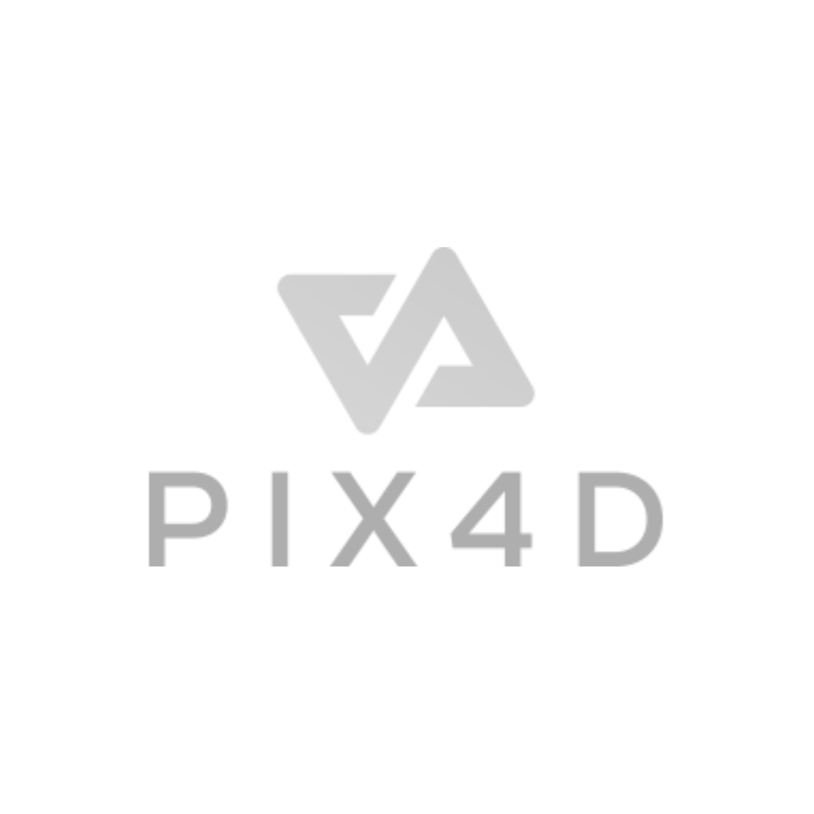
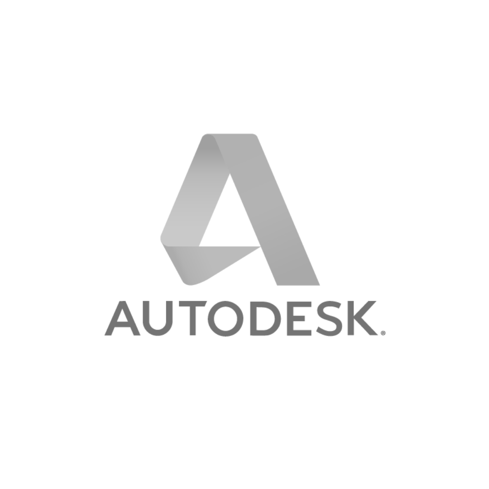
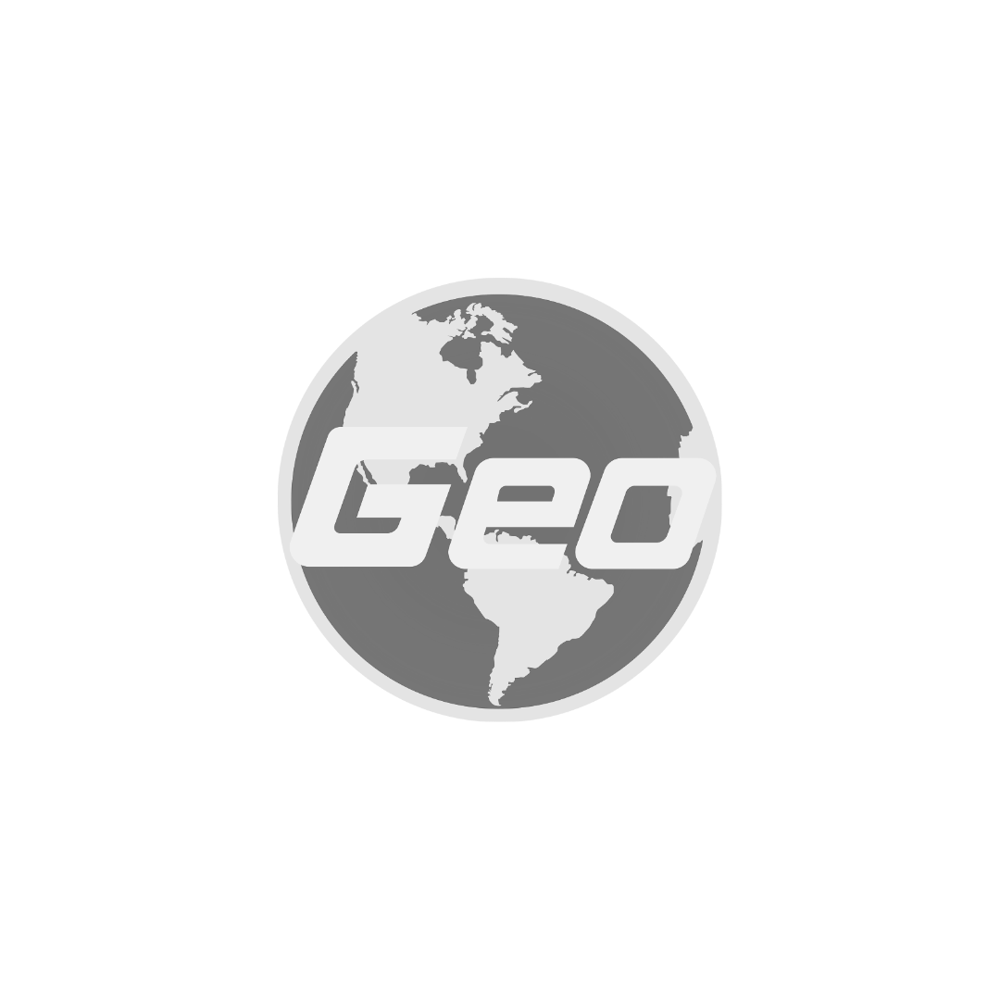
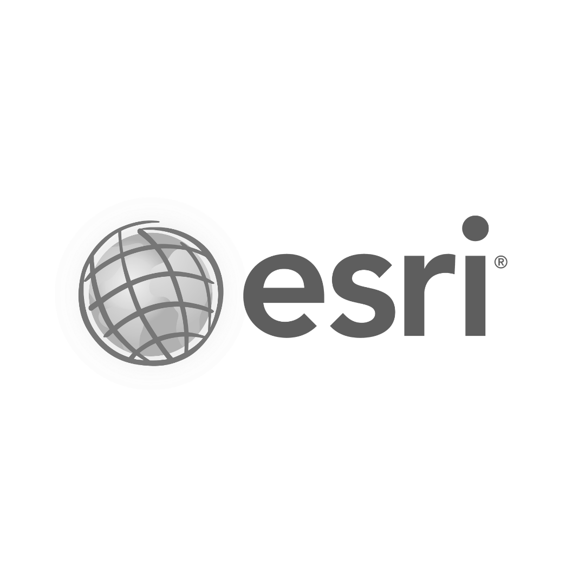
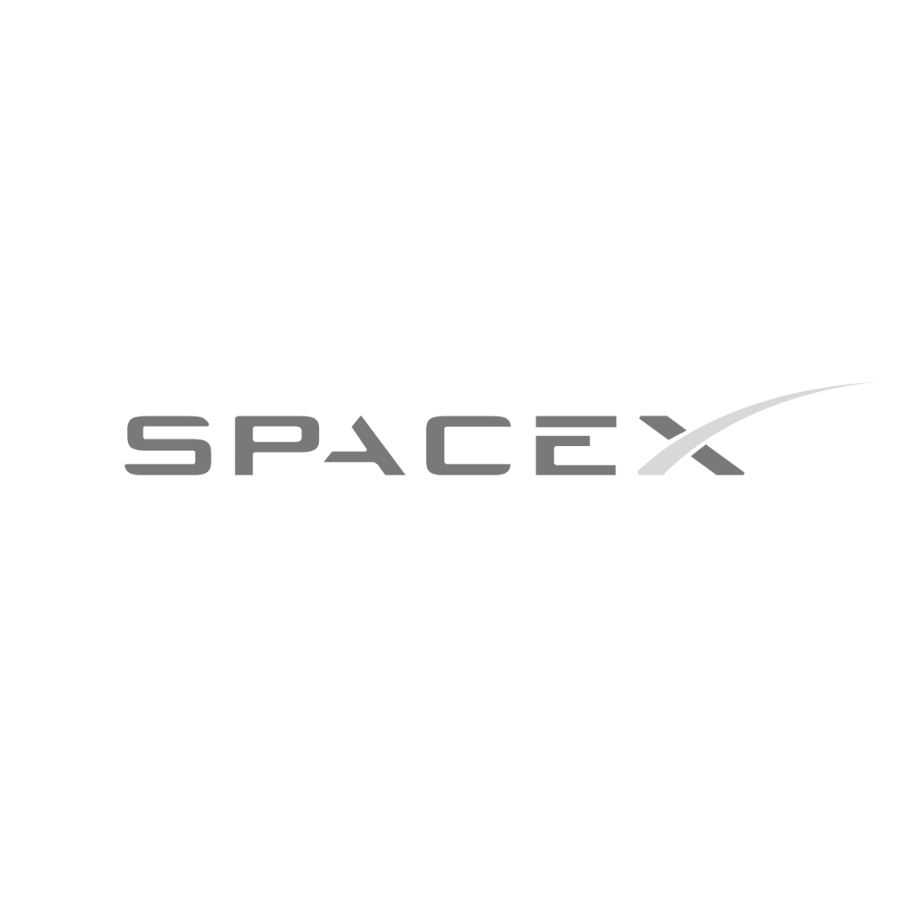
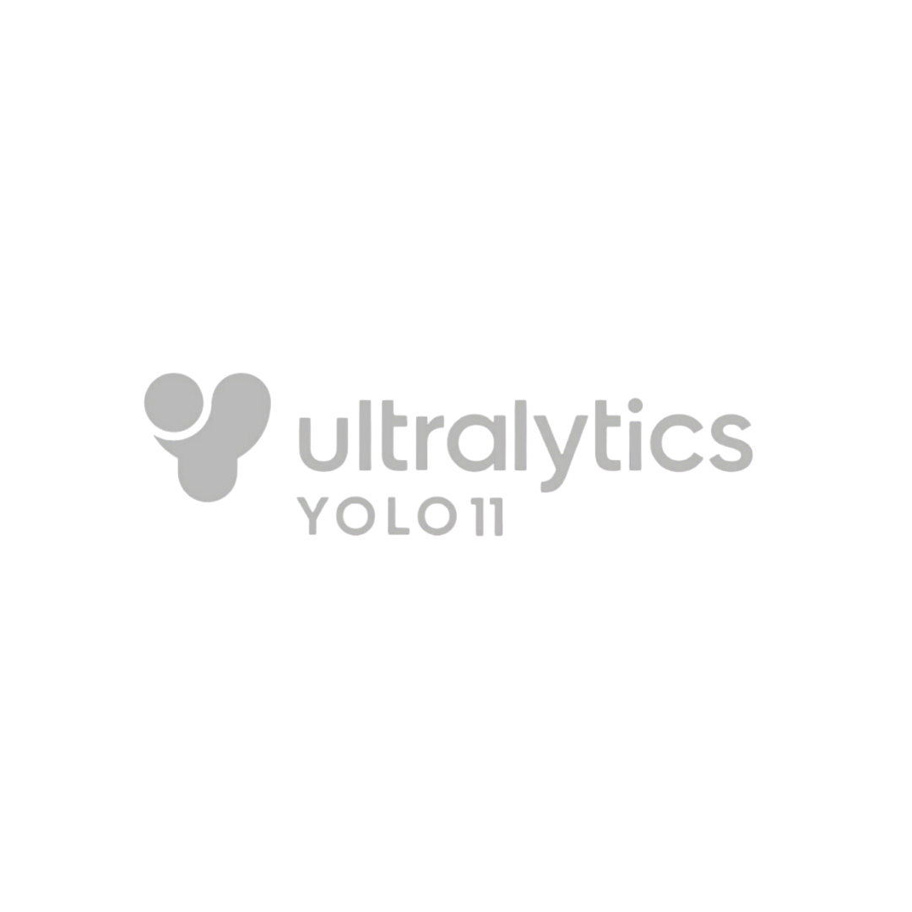
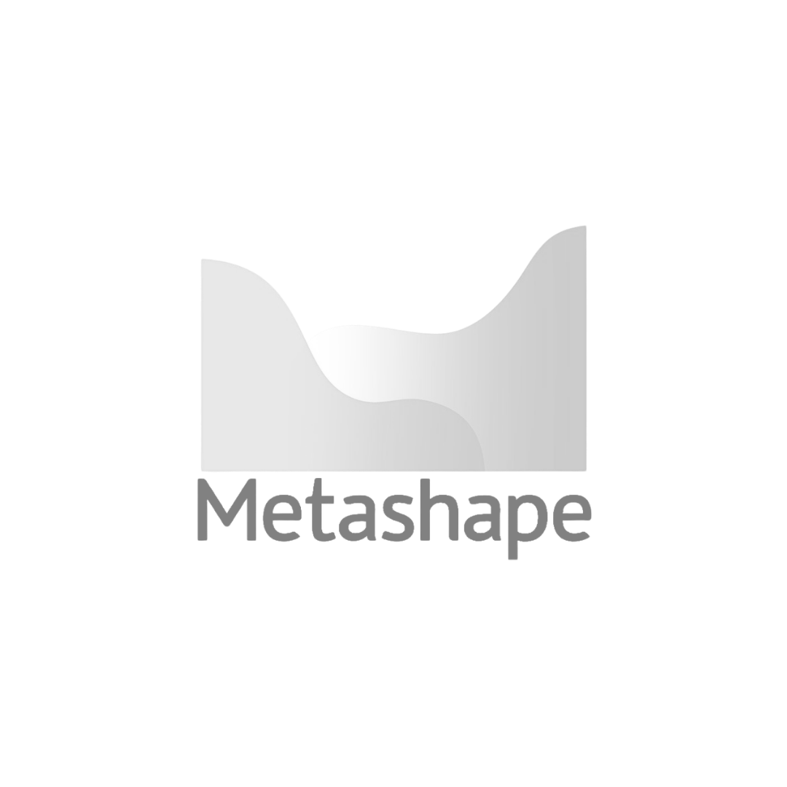

Topografía Digital y Seguimiento de Avance de Obra fotovoltaica
Aquí puedes agregar la descripción detallada del servicio "Pathfinder". El diseño permite tener texto extenso sin problemas. La información fluye naturalmente y, si hay mucho contenido, un scroll vertical aparecerá solo en esta columna derecha.
Esto asegura que el usuario pueda seguir interactuando con las imágenes de la izquierda mientras lee el contenido completo sobre los beneficios de la topografía digital en proyectos fotovoltaicos.